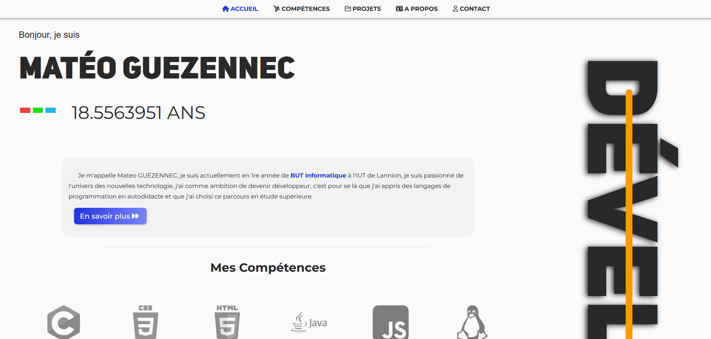

x projets trouvés
Poulailler Connecté
Pour le grand Oral du Baccaloréat j'ai réalisé un Poulailler qui transmetté les informations capté a un site web
Clique pour en savoir plus
Description du Projet :
Parmit les projets proposé moi et mes 2 équipiers nous avons choisis de prends le poulailler connecté, Le projets étais de proposé une solutions pour rendre un habitat de bas cours connecté. Nous Avons donc pense à mettre :
- Puce RFID pour le comptage de poules
- Capteur de température
- Servo-moteur pour ouvrir/fermer la porte
- Balance pour peuser l'eau
- Reconnaice d'image pour compter les oeufs
- Toutes les données envoyaient sur un site web
Je me suis occupé du site Web ainsi que l'envoi des données de l'arduino.
L'Arduino :
Dans le projet je me suis occupé de l'envoi de données vers un ordinateur via le réseau grace l'encapsulation du protocole UDP. j'ai donc pris un Arduino Uno équipé d'un Shield Ethernet
Le Site Web :
Pour faire une Interface Homme Machine j'ai mis en place un site web avec un server NodeJS en backend qui reçoit les données UDP via le réseau puis communique avec la page web via web socket.
Le site web est divisé en 4 parties :
- Accueil - Toutes les informations sont affichées sous forme visuel
- Logs - Toutes les informations sont affichées sous forme de tableau avec heures de réception
- Paramètre - Où on peut voir les paramètres de réception du serveur
- Aide - Les infos en cas de problème
Portfolio
Dans la démarche de développer mon CV et de présenter mes projets j'ai réalisé le site que vous visitez actuellement.
Clique pour en savoir plus
J'ai pensé le site en plusieurs étapes:
- Visualisation des pages et Création d'une arborescence du site
- Création d'une charte graphique
- Création d'une maquette sur Figma afin de faire une mise en page
- Développement du site en HTML, CSS et JavaScript
- Mise en ligne du site via un hébergeur Web
Les Défis :
Pour créer ce site je me suis imposé de tout faire par moi même c'est a dire pas de copier coller de site comme StackOverflow ou autre.
Pareil pour les problèmes rencontrés, je suis seulement aidé des documentations en ligne comme w3school.com ou MDN web docs.
L'étape final était le peuplement du site avec tous les projets que j'avais déjà fait puis le remplissage des autres pages avec toutes les informations.
Site Vieux Pistons Brestons
Description Projet
Clique pour en savoir plus
.